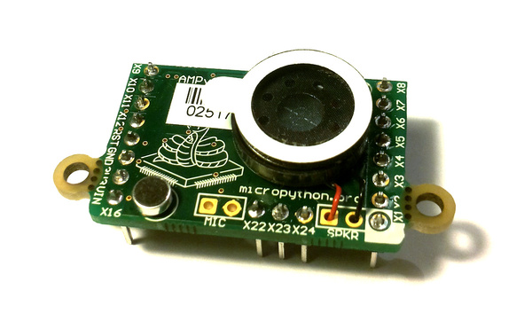

4. The AMP audio skin¶
Soldering and using the AMP audio skin.
{kind=link}

The following video shows how to solder the headers, microphone and speaker onto the AMP skin.
For circuit schematics and datasheets for the components on the skin see The pyboard hardware.
4.1. Example code¶
The AMP skin has a speaker which is connected to DAC(1) via a small
power amplifier. The volume of the amplifier is controlled by a digital
potentiometer, which is an I2C device with address 46 on the IC2(1) bus.
To set the volume, define the following function:
import pyb
def volume(val):
pyb.I2C(1, pyb.I2C.MASTER).mem_write(val, 46, 0)
Then you can do:
>>> volume(0) # minimum volume
>>> volume(127) # maximum volume
To play a sound, use the write_timed method of the DAC object.
For example:
import math
from pyb import DAC
# create a buffer containing a sine-wave
buf = bytearray(100)
for i in range(len(buf)):
buf[i] = 128 + int(127 * math.sin(2 * math.pi * i / len(buf)))
# output the sine-wave at 400Hz
dac = DAC(1)
dac.write_timed(buf, 400 * len(buf), mode=DAC.CIRCULAR)
You can also play WAV files using the Python wave module. You can get
the wave module here and you will also need
the chunk module available here. Put these
on your pyboard (either on the flash or the SD card in the top-level directory). You will need an
8-bit WAV file to play, such as this one,
or to convert any file you have with the command:
avconv -i original.wav -ar 22050 -codec pcm_u8 test.wav
Then you can do:
>>> import wave
>>> from pyb import DAC
>>> dac = DAC(1)
>>> f = wave.open('test.wav')
>>> dac.write_timed(f.readframes(f.getnframes()), f.getframerate())
This should play the WAV file.